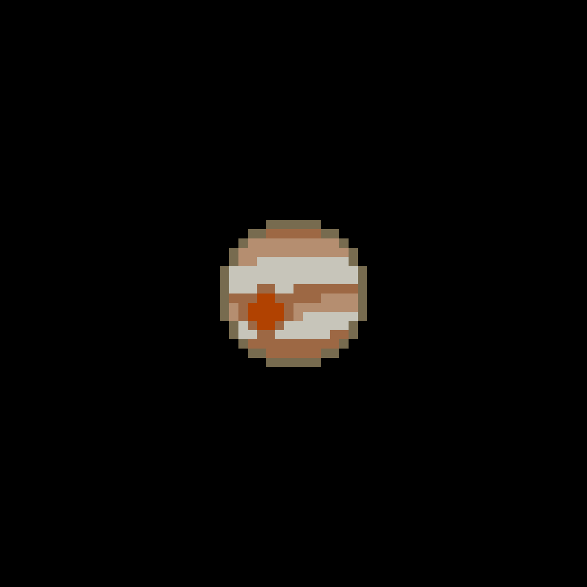

Planeten KOI-55 b har gått igenom mycket. KOI-55 b brukade ha en storlek som liknade Jupiter. Nu har den en massa som är 56% mindre än Jorden eftersom den blev uppäten av sin stjärna. Den har blivit sten-lik och har en temperatur som är varmare än solens yta.
Planeten är en av de hetaste planeter som upptäcktes. Den är så varm att delar av den avdunstar.